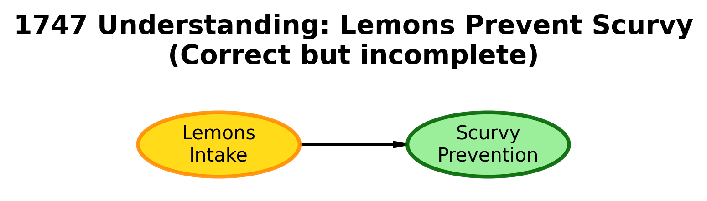
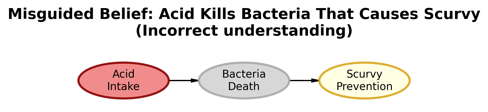
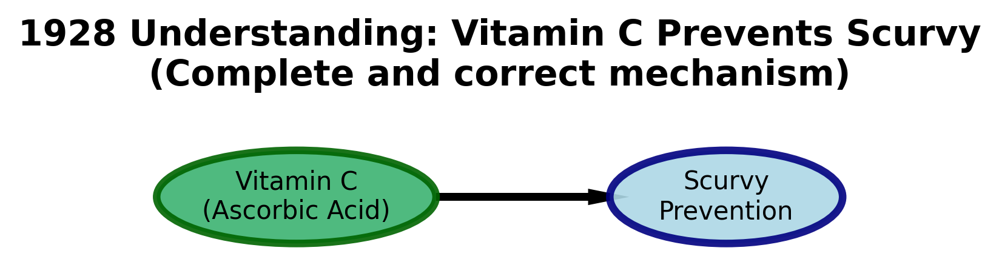

DAFT package imported successfully!
Ready to create beautiful DAGs!DAFT Package Challenge
Recreating the Scurvy DAGs with Beautiful Visualizations
🎨 DAFT Package Challenge - Recreating the Scurvy DAGs
The Problem: Mastering Probabilistic Graphical Models with DAFT
Core Question: How can we use the DAFT package to create visually appealing Directed Acyclic Graphs (DAGs) that tell a compelling data story?
The Challenge: You’ll recreate three historical DAGs depicting the fascinating story of how we lost and rediscovered the cure to scurvy. This challenge teaches you to use DAFT for creating professional-quality probabilistic graphical models.
Our Approach: We’ll work through the three different understandings of the scurvy data generating process, learning DAFT customization techniques while exploring a crucial moment in medical history.
The Scurvy Story: A Data Science Tragedy
Scurvy was a devastating disease that affected sailors on long voyages. The cure was discovered in 1747, but due to a misunderstanding about the cause, the cure was lost for over 150 years. The story involves three different understandings of the data generating process:
- 1747 Understanding: Lemons prevent scurvy (correct but incomplete!)
- Misguided Belief: Acid kills bacteria that causes scurvy (wrong!)
- 1928 Understanding: Vitamin C prevents scurvy (the real mechanism)
Environment Setup
First, let’s install the DAFT package and set up our environment:
The Three DAGs: My Mission
My task is to recreate these three historical DAGs using DAFT, making them visually appealing and professionally formatted.
DAG 1: The 1747 Understanding (Correct but Incomplete)
Historical Context: In 1747, James Lind discovered that lemons prevent scurvy through a controlled experiment. However, the understanding was incomplete - they knew lemons worked but not why.
Recreate this DAG showing the relationship between lemons and scurvy prevention.
C:\Users\souja\AppData\Local\Temp\ipykernel_4132\3054205732.py:31: UserWarning: This figure includes Axes that are not compatible with tight_layout, so results might be incorrect.
plt.tight_layout()
🍋 DAG 1: The 1747 Understanding (Correct but Incomplete)
- Structure:
Lemons Intake → Scurvy Prevention(simple direct relationship) - Historical Context: James Lind’s controlled experiment proved lemons prevent scurvy
- Accuracy: ✅ Correct but incomplete - they knew WHAT worked but not WHY
- Visual Design: Gold lemons node → Light green prevention node
- Significance: This was groundbreaking empirical evidence but lacked mechanistic understanding
DAG 2: The Misguided Belief (Wrong Understanding)
C:\Users\souja\AppData\Local\Temp\ipykernel_4132\3800654691.py:40: UserWarning: This figure includes Axes that are not compatible with tight_layout, so results might be incorrect.
plt.tight_layout()
🔬 DAG 2: The Misguided Belief (Wrong Understanding)
- Structure:
Acid Intake → Bacteria Death → Scurvy Prevention(incorrect causal chain) - Historical Context: People wrongly believed acid killed scurvy-causing bacteria
- Accuracy: ❌ Incorrect - led to disastrous substitutions (limes, vinegar)
- Visual Design: Light coral acid → Gray bacteria death → Light yellow prevention
- Consequence: This misunderstanding caused scurvy to return and killed thousands of sailors
DAG 3: The 1928 Understanding (Complete and Correct)
C:\Users\souja\AppData\Local\Temp\ipykernel_4132\383013814.py:32: UserWarning: This figure includes Axes that are not compatible with tight_layout, so results might be incorrect.
plt.tight_layout()
💊 DAG 3: The 1928 Understanding (Complete and Correct)
- Structure:
Vitamin C (Ascorbic Acid) → Scurvy Prevention(true mechanism) - Historical Context: Scientific discovery of the actual biochemical mechanism
- Accuracy: ✅ Complete and correct - explains both HOW and WHY lemons work
- Visual Design: Medium sea green Vitamin C → Light blue prevention (thicker edges)
- Significance: Finally provided the complete causal understanding needed for reliable prevention
📊 DAG Summary: The Evolution of Scurvy Understanding
The three DAGs we’ve created represent a fascinating journey through the history of scientific understanding. Each tells a different story about how we understood (or misunderstood) the cause and prevention of scurvy.
🔬 Key Insights from the DAG Evolution:
- DAG 1 shows empirical knowledge without mechanistic understanding
- DAG 2 demonstrates how wrong theories can be more dangerous than no theory
- DAG 3 represents complete scientific understanding with both correlation and causation